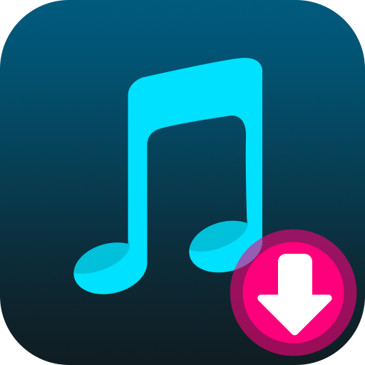

‹ 플레이리스트와 폴더
보관함
＋ 음악 추가
저장된 음악을 불러오는 중…
전체 음악
0곡
선택
전체 선택
0곡 선택
선택 해제
재생
임의 재생
편집
추가 순
제목 순
영상 → MP3
음악함 백업
백업 복원
테스트 음악 추가
0곡 선택됨
폴더로 이동
삭제
0:00
−0:00
↻ 전체 반복
재생 목록
음악 추가
파일에서 음악 추가
새 폴더 만들기
새 플레이리스트 만들기
영상 → MP3
플레이리스트에서 제거
폴더로 이동
음악함에서 삭제
플레이리스트에 추가
새 플레이리스트 만들기
음악 선택
이름 변경
삭제
플레이리스트 음악 선택
완료
취소
음성 추출
영상 선택
저장할 폴더
저장 형식
MP3
M4A · AAC
WAV · 무압축
FLAC · 무손실
M4A · ALAC 무손실
M4A · 원본 음성 유지
음질
192 kbps · 기본
128 kbps · 작은 파일
320 kbps · 큰 파일
변환하고 저장
변환 취소
선택한 음악 이동
이동할 폴더
이동
취소
플레이리스트에서만 제거
음악함에서 삭제
취소